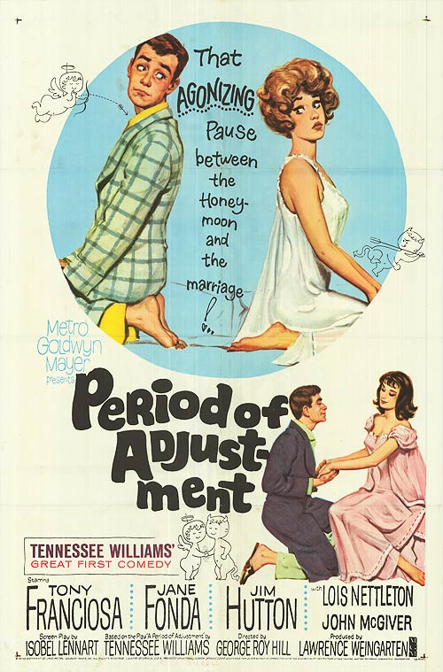

Period of Adjustment
35th Academy Awards
(Oscars 1963)
1 Nomination, 0 Awards
| Nominations | ||
|---|---|---|
| Category | Nominees | Result |
| Art Direction (Black-and-White) | Dick Pefferle, Edward Carfagno, George W. Davis, and Henry Grace | Nominated |